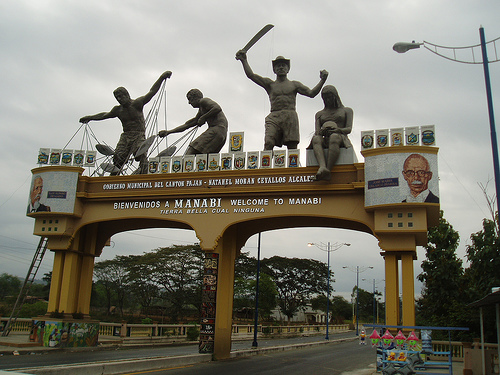
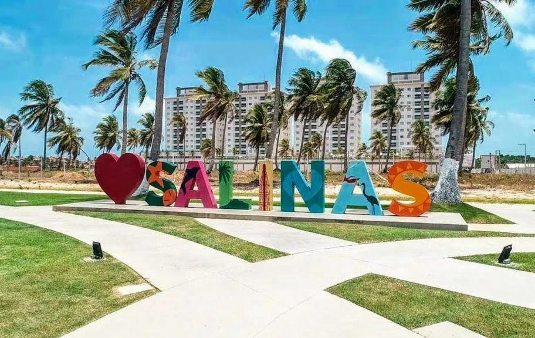
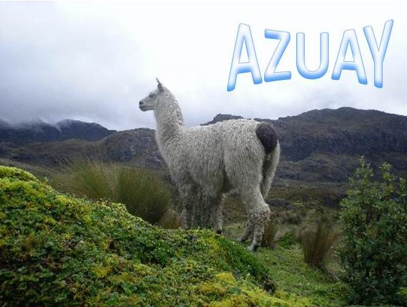
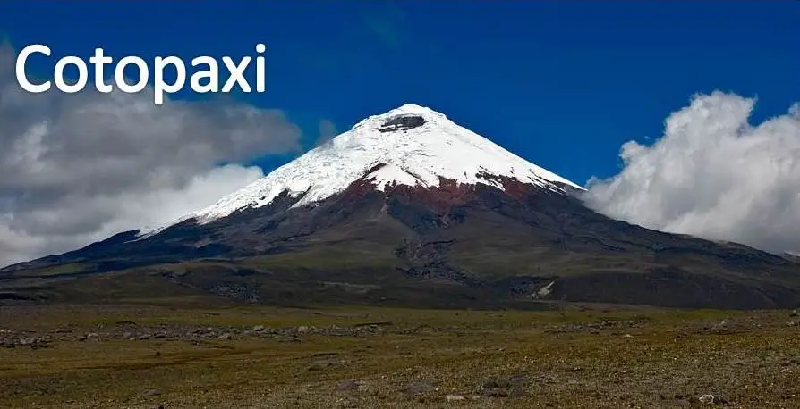
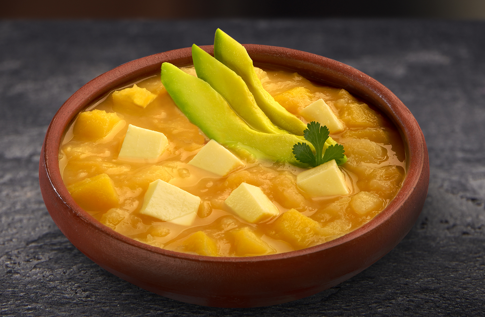
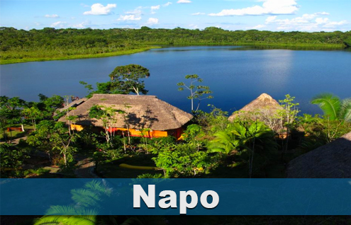
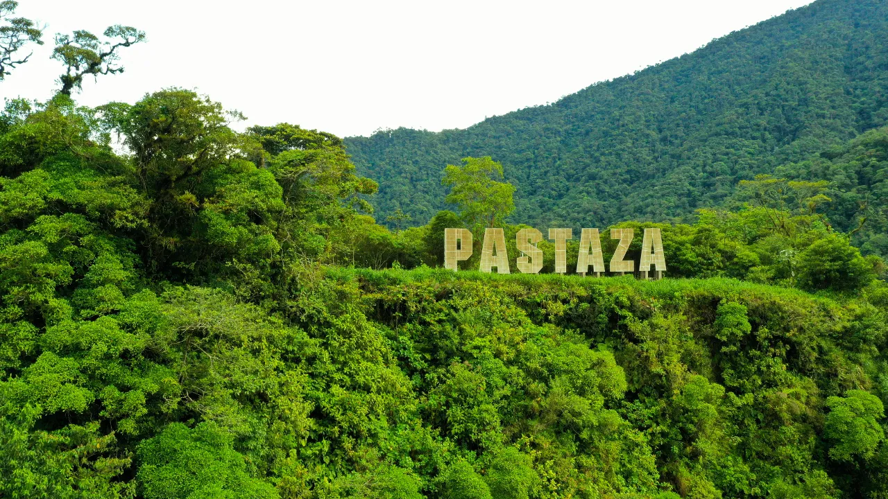
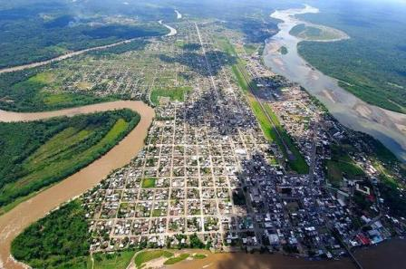

Ecuador es un país ubicado en América del Sur y recibe su nombre porque la línea ecuatorial atraviesa su territorio.
Su capital es Quito y su ciudad más poblada es Guayaquil. El idioma oficial es el español y la moneda oficial es el dólar estadounidense.
Ecuador es uno de los países con mayor biodiversidad del mundo. Tiene montañas, playas, selvas y las famosas Islas Galápagos.
Además, posee una gran riqueza cultural gracias a las tradiciones indígenas, mestizas y afroecuatorianas.
Dato importante: Ecuador está compuesto por 24 provincias.
Regiones naturales del Ecuador
Costa
Sierra
Oriente o Amazonía
Región Insular o Galápagos
Comidas típicas del Ecuador
Ceviche
Hornado
Encebollado
Fritada
Bolón de verde
Curiosidad: Ecuador es el primer país del mundo en reconocer los derechos de la naturaleza en su Constitución
Tabla de información del Ecuador
Capital
Moneda
Población
Idioma
Quito
Dólar
Más de 18 millones
Español
🌊 Región Costa
La Región Costa se encuentra al oeste del Ecuador y es famosa
por sus playas, clima cálido y deliciosa gastronomía.
En esta región existen hermosos paisajes, puertos y ciudades turísticas.
La Costa ecuatoriana también se caracteriza por su música alegre,
sus tradiciones y sus comidas preparadas con mariscos y verde.
📍 Provincias importantes
Guayas
Provincia donde se encuentra Guayaquil,
la ciudad más grande y comercial del Ecuador.
Guayas posee importantes puertos,
malecones, parques y centros turísticos.
Su clima es cálido durante la mayor parte del año.

Manabí
Provincia famosa por sus playas,
gastronomía y tradiciones montuvias.
Manabí tiene pueblos pesqueros,
hermosos balnearios y una gran riqueza cultural.
Esmeraldas
Provincia reconocida por sus playas,
cultura afroecuatoriana y música alegre.
Esmeraldas posee bosques tropicales,
playas hermosas y una importante diversidad cultural.
🎵 Música tradicional
Guayas
En Guayas se escucha música tropical,
salsa y marimba durante fiestas y celebraciones.
Manabí
La música costeña y los pasillos
forman parte de la cultura manabita.
Esmeraldas
La marimba es la música más representativa
de la cultura afroecuatoriana.
📅 Fechas importantes
25 de julio
Fundación de Guayaquil.
Esta fecha celebra la creación de la ciudad de Guayaquil.
Se realizan conciertos, desfiles y actividades culturales.
5 de agosto
Independencia de Esmeraldas.
Se recuerda la libertad de la provincia del dominio español.
Hay danzas, música y celebraciones tradicionales.
12 de octubre
Celebraciones culturales.
En varias ciudades de la Costa se realizan eventos
culturales, ferias y actividades artísticas.
🍽️ Platos típicos
Encebollado
Sopa tradicional preparada con pescado,
yuca y cebolla encurtida.
Ceviche
Plato preparado con mariscos,
limón, cebolla y tomate.
Bolón de verde
Bola de verde rellena con queso o chicharrón.
🎮 Juegos tradicionales
Rayuela
Juego tradicional muy popular entre niños.
Canicas
Juego realizado con pequeñas bolas de vidrio.
Fútbol playero
Juego y deporte realizado en las playas.
🏝️ Lugares turísticos
Montañita
Playa famosa por el surf y la vida nocturna.

Salinas
Balneario turístico reconocido por sus playas y hoteles.
Atacames
Playa muy visitada por turistas nacionales y extranjeros.
⛰️ Región Sierra
La Región Sierra del Ecuador está formada por la Cordillera de los Andes.
Se caracteriza por sus montañas, volcanes, lagunas y hermosos paisajes naturales.
Además, posee ciudades históricas con gran riqueza cultural y tradiciones ancestrales.
El clima suele ser frío o templado dependiendo de la altura.
En esta región viven muchas comunidades indígenas que mantienen vivas sus costumbres,
música, vestimenta típica y fiestas tradicionales.
📍 Provincias importantes
Pichincha
Provincia donde se encuentra Quito, capital del Ecuador.
Es famosa por la Mitad del Mundo y sus iglesias coloniales.

Azuay
Famosa por la ciudad de Cuenca y su arquitectura colonial.
También destaca por la elaboración de artesanías y sombreros de paja toquilla.

Cotopaxi
Conocida por el volcán Cotopaxi, uno de los volcanes activos más altos del mundo.
Es muy visitada por turistas y deportistas.
📅 Fechas importantes
6 de diciembre
Fundación de Quito
Se celebra la fundación española de la ciudad de Quito en el año 1534.
Durante estas fiestas hay desfiles, conciertos, comida típica y eventos culturales.
3 de noviembre
Independencia de Cuenca
Se recuerda la independencia de Cuenca del dominio español en 1820.
La ciudad celebra con música, danzas, ferias y actividades históricas.
21 de junio
Fiesta del Inti Raymi
Fiesta ancestral indígena dedicada al Sol y a las cosechas.
Las comunidades realizan rituales, bailes y ceremonias tradicionales.
🍽️ Platos típicos
Hornado
Cerdo horneado acompañado con mote, llapingachos y ensalada.
Es uno de los platos más tradicionales de la Sierra.
Fritada
Carne de cerdo cocinada lentamente en su propia grasa.
Se sirve con mote, maduro y tortillas de papa.

Locro de papa
Sopa tradicional preparada con papas, queso y aguacate.
Es muy consumida en ciudades andinas.
🎮 Juegos tradicionales
Trompo
Juego tradicional donde se hace girar un trompo utilizando una cuerda.
La cuerda
Juego popular entre niños que consiste en saltar una cuerda en movimiento.
Las Canicas
Juego tradicional con canicas donde los participantes compiten por precisión.
🏔️ Lugares turísticos
Laguna del Quilotoa
Hermosa laguna ubicada dentro del cráter de un volcán en la provincia de Cotopaxi.
Sus aguas de color turquesa atraen a turistas nacionales y extranjeros.
Los visitantes pueden caminar alrededor del cráter,
tomar fotografías y disfrutar de la naturaleza andina.
Ingapirca
Es el complejo arqueológico más importante del Ecuador,
ubicado en la provincia del Cañar.
Fue construido por los pueblos cañaris e incas.
Tiene templos de piedra y sitios ceremoniales antiguos.
Parque Nacional El Cajas
Parque natural ubicado en Azuay,
famoso por sus lagunas, montañas y biodiversidad.
Es ideal para caminatas, observación de aves y turismo ecológico.
El clima suele ser frío y húmedo.
Baños de Agua Santa
Ciudad turística de la Sierra conocida por sus cascadas,
deportes extremos y aguas termales.
Los turistas disfrutan de columpios gigantes,
rafting, ciclismo y recorridos por la Ruta de las Cascadas.
Dato curioso:
En la Sierra se celebran muchas fiestas tradicionales como el Inti Raymi,
donde las comunidades indígenas agradecen al Sol por las cosechas y realizan
bailes típicos con música andina.
🐢 Región Insular o Galápagos
La Región Insular del Ecuador está formada por las Islas Galápagos, ubicadas en el océano Pacífico.
Estas islas son famosas por su gran biodiversidad y por tener animales únicos en el mundo, como las tortugas gigantes,
las iguanas marinas y los piqueros de patas azules.
Las Galápagos fueron declaradas Patrimonio Natural de la Humanidad por la UNESCO debido a su importancia ecológica y científica.
Además, inspiraron la teoría de la evolución de Charles Darwin.
📍 Provincia importante
Galápagos
Provincia reconocida mundialmente por su fauna única, playas naturales y reservas ecológicas.
📅 Fechas importantes
18 de febrero
Se celebra la provincialización de Galápagos con eventos culturales, actividades estudiantiles y desfiles.
Celebraciones ecológicas
Durante el año se realizan campañas para proteger los animales, las playas y el medio ambiente.
Día de Charles Darwin
Fecha especial dedicada al científico que estudió las especies de Galápagos y desarrolló la teoría de la evolución.
🍽️ Platos típicos
Langosta
Marisco muy famoso en Galápagos preparado a la parrilla o acompañado con arroz y ensalada.
Bacalao
Pescado preparado con arroz, especias y vegetales frescos de la región insular.
Mariscos
Comidas frescas del océano Pacífico como camarones, pulpo y pescado.
Ceviche
Plato típico preparado con mariscos frescos, limón, cebolla y especias.
🎮 Juegos tradicionales
Juegos de playa
Actividades recreativas realizadas en la arena y cerca del mar.
Natación
Deporte muy practicado por niños y turistas en las playas de Galápagos.
Actividades ecológicas
Juegos y dinámicas educativas para aprender a cuidar la naturaleza y los animales.
🏝️ Lugares turísticos
Isla Santa Cruz
Isla famosa por sus playas, túneles de lava y la Estación Científica Charles Darwin.
Isla Isabela
La isla más grande de Galápagos, conocida por sus volcanes y tortugas gigantes.
Tortuga Bay
Playa reconocida por sus aguas cristalinas y paisajes naturales.
San Cristóbal
Isla turística famosa por sus leones marinos y hermosas playas.
Dato curioso: Las iguanas marinas de Galápagos son únicas en el mundo porque son las únicas iguanas que pueden nadar y alimentarse dentro del mar.
Además, las tortugas gigantes de Galápagos pueden vivir más de 100 años y llegar a pesar cientos de kilos.
🌳 Región Oriente
La región Oriente o Amazonía ecuatoriana es una de las zonas más naturales y biodiversas del Ecuador.
Está formada por extensas selvas tropicales, grandes ríos y una enorme variedad de animales y plantas.
En esta región viven varias nacionalidades indígenas como los Shuar, Achuar, Huaorani y Kichwas amazónicos,
quienes conservan sus tradiciones, idiomas y costumbres ancestrales.
El Oriente es muy importante para el país por su riqueza natural, cultural y turística.
Además, posee parques nacionales y reservas ecológicas reconocidas mundialmente.
📍 Provincias importantes

Napo
Provincia famosa por el turismo ecológico, las cavernas y los deportes de aventura.
Su capital es Tena.

Pastaza
Es la provincia más grande del Ecuador.
Se caracteriza por sus selvas, ríos amazónicos y comunidades indígenas.

Orellana
Aquí se encuentra parte del Parque Nacional Yasuní, uno de los lugares con mayor biodiversidad del planeta.
Sucumbíos
Provincia amazónica conocida por sus paisajes naturales, lagunas y producción petrolera.
Morona Santiago
Destaca por sus cascadas, montañas y la cultura ancestral del pueblo Shuar.
📅 Fechas importantes
12 de febrero
Día de la Amazonía ecuatoriana.
Se realizan actividades culturales y educativas para valorar la naturaleza y la cultura amazónica.
Celebración de la Pachamama
Fiesta ancestral dedicada a la Madre Tierra.
Las comunidades agradecen por los alimentos, la naturaleza y la vida.
Fiestas indígenas ancestrales
Las nacionalidades amazónicas celebran con música, danzas, comida típica y rituales tradicionales.
🍽️ Platos típicos
Maito
Plato típico amazónico preparado con pescado o carne envuelto en hojas de bijao y cocinado al fuego.
Chontacuro
Larva amazónica tradicional rica en proteínas.
Se consume asada o frita.
Yuca cocinada
Acompañamiento típico de la Amazonía utilizado en muchas comidas tradicionales.
Té de Guayusa
Bebida tradicional amazónica preparada con hojas naturales energéticas y medicinales.
🎮 Juegos tradicionales
Tiro con cerbatana
Juego ancestral utilizado antiguamente para la caza en la selva amazónica.
Juegos con semillas
Actividades recreativas tradicionales realizadas por niños de comunidades amazónicas.
Carreras tradicionales
Competencias organizadas durante festividades indígenas y celebraciones comunitarias.
🌿 Lugares turísticos
Parque Yasuní
Parque Nacional reconocido mundialmente por su enorme biodiversidad y riqueza natural.
Tena
Ciudad turística famosa por los deportes extremos, cavernas y paisajes naturales.
Puyo
Ciudad amazónica conocida por sus cascadas, jardines botánicos y clima tropical.
Reserva Cuyabeno
Lugar ideal para observar animales exóticos, navegar en canoa y conocer la selva amazónica.
Dato curioso: La región Oriente del Ecuador posee una de las mayores biodiversidades del planeta.
En el Parque Nacional Yasuní habitan miles de especies de animales y plantas, además de comunidades indígenas
que conservan tradiciones ancestrales y conocimientos únicos sobre la selva amazónica.
Lugares Turísticos Recomendados del Ecuador
Ecuador tiene muchos lugares increíbles para visitar. Aquí algunos de los destinos turísticos más famosos y recomendados:
Lugar
Ubicación
¿Por qué visitarlo?
Islas Galápagos
Región Insular
Por sus animales únicos y playas hermosas.
Baños de Agua Santa
Sierra
Por sus cascadas y deportes extremos.
Montañita
Costa
Por sus playas y ambiente turístico.
Parque Nacional Yasuní
Oriente
Por su biodiversidad y selva amazónica.
Cuenca
Sierra
Por su arquitectura colonial y cultura.
Nivel de seguridad en ciudades turísticas
Ciudad
Nivel de seguridad
Recomendación
Cuenca
Seguridad moderada y tranquila
Muy recomendada para turistas y familias.
Quito
Seguridad media
Visitar lugares turísticos y evitar zonas peligrosas en la noche.
Montañita
Seguridad moderada
Cuidar pertenencias en zonas muy concurridas.
Baños
Ciudad turística segura
Ideal para turismo y deportes extremos.
Galápagos
Muy segura
Excelente destino ecológico y familiar.
Importante: Como en cualquier país, se recomienda siempre cuidar las pertenencias y seguir las normas de seguridad turística.
Símbolos Patrios del Ecuador
Bandera 🇪🇨
La bandera del Ecuador tiene colores amarillo, azul y rojo.
Representa la riqueza, el cielo y la sangre de los héroes.
Escudo
El escudo ecuatoriano muestra el volcán Chimborazo, el río Guayas y el cóndor andino.
Himno Nacional
El himno nacional del Ecuador representa el patriotismo y la libertad del país.